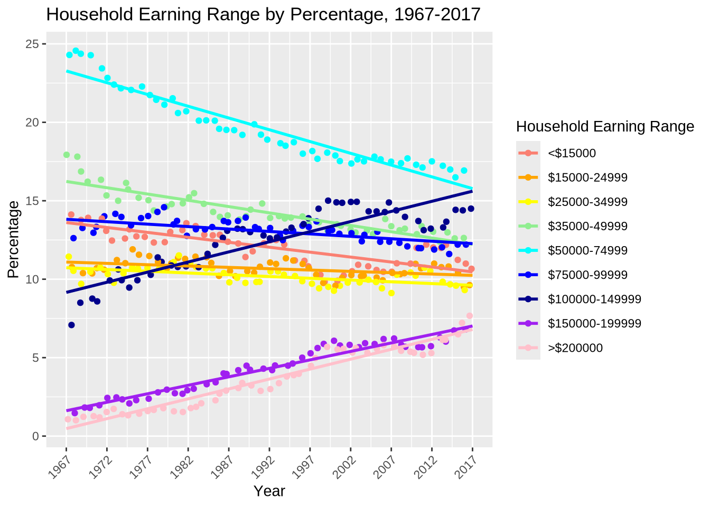

knitr::opts_chunk$set(echo = TRUE)
library(tidyverse)
library(readxl)Gender Inequities through an Economic Lens
CSC 110, Spring 2025
Introduction
In the United States, it is often preached how it is the “Land of Opportunity” and that work ethic will equal your output, usually through income and earnings. However, there is still systemic oppression present that can prevent this ideal from occurring.
As a woman, I have grown up around stereotypes and appropriation surrounding my gender. The history of equal rights for women is very recent, with legislature such as the 19th Amendment and Title IX both being very necessary in their nature yet contemporary ideas in our society. Because of the only recent historical landmarks in women’s history, various aspects of our lives are still affected by systemic sexism. One of the most apparent results of this oppression is the gender wage gap, in which it is theorized how a male would have a higher paycheck than his female counterpart despite having the exact qualifications and characteristics.
I will be researching how the gender wage gap still affects women in the 21st century, asserting how much work is to be done for economic equity between the sexes. I will be using data from United States Census Bureau with data for each year between the 1960s and 2017, highlighting the pivotal years in which significant change was passed legislatively.
Data Description
Data Set 1: Number and Real Median Earnings of Total Workers and Full-Time, Year-Round Workers by Sex and Female-to-Male Earnings Ratio: 1960 to 2017
Composition
This data set presents comparisons of workers on the basis of male and female, along with total number of workers vs. total number of full-time workers and each populations respective median earnings. The grain of the data is course as each data point is an annual earning or a total of a certain population. There are 59 rows and 18 columns. The variables are total workers vs full-time workers, earnings for each, and male vs female workers, and earnings for each, with all being numeric values. The data set is meant to be a complete enumeration of the subject per the Census Bureau’s basis of taking data from the “universe”, which is the “civilian non-institutional population of the United States living in housing units and members of the Armed Forces living in civilian housing units on a military base or in a household not on a military base.”
Relevance
This data set can aid in answering my question regarding sexism and income, in particular the gender-wage gap can be further explored with this data on female verse male earnings and total amount of each that are working and are working full-time. This data can explore the discrepancies in income and the participation of female workers in general, and would either prove or disprove the gender-wage gap.
Source
My source is the United States Census Bureau on Income and Poverty in the United States in 2017 by Jessica Semega, Kayla Fontenot, and Melissa Kollar. https://www.census.gov/data/tables/2018/demo/income-poverty/p60-263.html
Data Set 2: Households by Total Money Income, Race, and Hispanic Origin of Householder: 1967 to 2017
Composition
This data set presents households by total money income, race, and Hispanic origin of householder. The grain of the data is course as each data point is either a percentage of distribution for household earnings or an annual mean or median income. There are 383 rows and 16 columns. The variables are race, categorical earnings distribution, median and mean income. I extracted a data set within this data set that categorizes the amount of households in each income bracket regardless of race or Hispanic origin in addition to median income, with 51 rows and 16 columns. I decided to include this data set as I am focusing on the inequities based on gender rather than other factors such as race and Hispanic origin. However, it must be acknowledged that there may be systemic oppression due to those factors as well but that can be further explored in an entirely other research project.
The data set is meant to be a complete enumeration of the subject per the Census Bureau’s basis of taking data from the “universe”, which is the “civilian non-institutional population of the United States living in housing units and members of the Armed Forces living in civilian housing units on a military base or in a household not on a military base.”
Relevance
By including percentage of household income within certain ranges and the median values for household income, I would like to be able to compare and contrast female and male earnings with household earnings, demonstrating the discrepancies in how much a female is able to contribute to her household. Being unable to be a significant part of household earnings can affect the socioeconomic mobility of the individuals in that household, which can perpetuate certain harmful sociocultural cycles of women lacking the resources necessary to climb the American ladder.
Source
My source is the United States Census Bureau on Income and Poverty in the United States in 2017 by Jessica Semega, Kayla Fontenot, and Melissa Kollar. https://www.census.gov/data/tables/2018/demo/income-poverty/p60-263.html
Data Analysis
Import Data
To begin, I downloaded my first Excel file for analysis from the Census Bureau page (Number and Real Median Earnings of Total Workers and Full-Time, Year-Round Workers by Sex and Female-to-Male Earnings Ratio: 1960 to 2017). Within the Excel sheet, I made minor adjustment to the data by deleting multiple rows used to describe one column data, consolidating one row for into one name for each column. I also deleted many superscripts that were interspersed within the “Year” column. I then downloaded this new file as “Data1” as it is my first data set I will be using in my project and uploaded the file into my “Data” folder within my “Final Project” folder. After I imported my data set, I then created a new dataframe “cleanData1” that converted the column characters to numeric. Finally, I used the great tables function to produce a summary table of my first data set on Female and Male work participation and earnings.
Data1 <- read_excel("data/Data1.xls",
skip = 3)
Data1 <- Data1[1:58, ]
cleanData1 <- Data1 %>% mutate_if(is.character, as.numeric)
gt::gt(cleanData1[1:58, ], )Loading Data for Total Male and Female Workers Over Time
Next, I want to demonstrate the discrepancy between male and female work-participation over time. I will do this by transforming my column-wise data for total male and female workers to row-wise data, so I can group by year and have total male and female worker totals as defined by their respective male or female designation. I also decided to begin my data at 1967 so that the range of “Year” was divisible by a multiple of 5, as the last value is 2017.
totals <- cleanData1 |>
pivot_longer(
cols = c(total_male_workers,total_female_workers),
names_to = "sex",
values_to = "total"
) |>
filter(Year >= 1967 & !is.na(total)) |>
select(Year, sex, total)
knitr::kable(totals)Plotting Total Male and Female Workers Over Time
I decided to initially demonstrate total male and female workers over time with a bar chart, with “Year” on the x-axis to show change over time, total amount of workers for each year on the y-axis, and female or male “sex” for each total as the color of the bar for each year. I chose to use the position “dodge” to place the column values for each sex for each year adjacent to each other so that the discrepancies between values can be depicted. Additionally, since there were many values for the “Year” x-axis, I decided the scale the x-axis to sequence the values from 1967 to 2017 by counts of 5.
In the bar chart, it can be concluded that while both male and female total workers have increased over time, the total amount of male workers has always been visibly greater than total amount of female workers. However, it should be noted that the distance between the values of total male vs female workers has appeared to shrink slightly over time, and has held this distance.
ggplot(totals) +
geom_col(
mapping = aes(
x = Year,
y = total,
fill = sex
),
position = "dodge"
) +
labs(
title = "Total Male vs Female Workers, 1967-2017",
x = "Year",
y = "Total Workers",
fill = "Sex"
) +
scale_x_continuous(
breaks = seq(1967, 2017, 5),
lim = c(1967, 2017)
) +
theme(
axis.text.x = element_text(
angle = 45,
hjust = 1
)
) +
scale_fill_manual(name="Sex",labels=c("Female", "Male"),values=c("darkred", "darkblue"))Warning: Removed 2 rows containing missing values or values outside the scale range
(`geom_col()`).
Plotting Total Male and Female Workers Over Time
Next, I wanted to demonstrate the growths of each male and female total workers over time, and how significant legislation such as Title IX in 1973 may have be a factor in the decreased gap between male and female total workers as found earlier. To achieve this, I utilized a scatter plot with “Year” on the x-axis, “total” on the y-axis, and “sex” as the different colors. Within the scatterplot, I used geom_smooth to demonstrate the line of best fit for each sex as they increase in total workers over time, which also shows the growth rate each sex has for total workers. By observation, it can be noted that the growth rate of female workers is slightly greater than growth rate of male workers, as if the lines were extended past the graph, then there would be an intersection at a finite number. Additionally, I included a vertical line within the graph at the x-value of 1973, when Title IX was enacted. I included this line to demonstrate how legislation like this may have aided in the increased growth of female workers as the discrepancy between male and female workers appears to decrease slightly.
totals |>
ggplot(
aes(
x = Year,
y = total,
color = sex
)
) +
geom_point() +
geom_smooth(method="lm", se = FALSE) +
scale_fill_discrete(
name = "Sex", labels = c("Female", "Male")
) +
labs(
title = "Total Male vs Female Workers, 1967-2017",
x = "Year",
y = "Total Workers",
color = "Sex"
) +
theme(
axis.text.x = element_text(
angle = 45,
hjust = 1
)
) +
scale_x_continuous(
breaks = seq(1967, 2017, 5),
lim = c(1967, 2017)
) +
geom_vline(
xintercept = 1973,
linetype = "solid",
color = "purple",
size = 1
) +
annotate("text", x = 1977, y = 80000, label = "Title IX") +
scale_color_manual(name="Sex",labels=c("Female", "Male"),values=c("darkred", "darkblue"))Warning: Using `size` aesthetic for lines was deprecated in ggplot2 3.4.0.
ℹ Please use `linewidth` instead.`geom_smooth()` using formula = 'y ~ x'
Loading Data for Median Income for Fulltime and All Workers Over Time
Next, I want to demonstrate how working full-time allows for an individual, male or female, to accumulate a higher salary, emphasizing the importance of working full-time to increase socioeconomic mobility. I will do this by transforming my column-wise data for total male and female median salary estimate and fulltime male and female median salary estimate to row-wise data, so I can group by year and have total and fulltime male and female median salary totals as defined by their respective variables. I also decided to begin my data at 1967 so that the range of “Year” was divisible by a multiple of 5, as the last value is 2017.
fulltime <- cleanData1 |>
pivot_longer(
cols = c(total_male_median_estimate,fulltime_male_median_estimate,total_female_median_estimate,fulltime_female_median_estimate),
names_to = "variable",
values_to = "estimate"
) |>
filter(Year >= 1967 & !is.na(estimate)) |>
select(Year, variable, estimate)
knitr::kable(fulltime)Plotting Median Income for Fulltime and All Workers Over Time
I wanted to visualize the significant difference in salary amount an individual makes when they are working full-time. To achieve this, I utilized a line graph with “Year” on the x-axis, the full-time or total estimate of salary for male and female workers on the y-axis, and each sex and full-time or total workers as the different colors. Since my four variables cannot be categorized within one group, I decided to utilize a manual color selection function to assign each variable a color within scale_color_manual. Female variables including full-time and total median salaries were in red colors, male variables including full-time and total median salaries were in blue colors, while full-time median salaries for both sexes were in their respective brighter shades.
fulltime |>
ggplot(
aes(
x = Year,
y = estimate,
color = variable
)
) +
geom_line() +
labs(
title = "Male Median Income vs Female Fulltime Median Income, 1967-2017",
x = "Year",
y = "Income",
color = "Median or Fulltime Median"
) +
scale_color_manual(values = c(
"fulltime_female_median_estimate" = "red",
"fulltime_male_median_estimate" = "blue",
"total_male_median_estimate" = "darkblue",
"total_female_median_estimate" = "darkred")
) +
theme(
axis.text.x = element_text(
angle = 45,
hjust = 1
)
) +
scale_x_continuous(
breaks = seq(1967, 2017, 5),
lim = c(1967, 2017)
) +
scale_color_manual(name="Sex",labels=c("Fulltime Female", "Fulltime Male","Female","Male"),values=c("red", "blue","darkred","darkblue"))Scale for colour is already present.
Adding another scale for colour, which will replace the existing scale.
Loading Data for Full-time to Total Workers Ratio
After observing the significant impact working full-time has on one’s salary, which can augment one’s socioeconomic standing by working full-time and making a higher salary, I wanted to explore how much each gender participates in full-time jobs. I began by filtering from my dataset to not include values for “N”, which indicate NA values for my variables of full-time and total workers for both sexes. I then create a new variable for the full-time to total workers ratio for each male and female group, then select my necessary columns as Year and the ratios both female and male workers.
fulltime_ratio <- cleanData1 |>
filter(
fulltime_female_workers != "N" &
fulltime_male_workers != "N" &
total_female_workers != "N" &
total_male_workers != "N"
) |>
mutate(
female_fulltime_ratio = fulltime_female_workers/total_female_workers,
male_fulltime_ratio = fulltime_male_workers/total_male_workers
) |>
select(Year, female_fulltime_ratio, male_fulltime_ratio) |>
pivot_longer(
cols = c(female_fulltime_ratio, male_fulltime_ratio),
names_to = "sex",
values_to = "ratio"
) |>
filter(Year >= 1967 & !is.na(ratio)) |>
select(Year, sex, ratio)
fulltime_ratio# A tibble: 100 × 3
Year sex ratio
<dbl> <chr> <dbl>
1 2017 female_fulltime_ratio 0.630
2 2017 male_fulltime_ratio 0.753
3 2016 female_fulltime_ratio 0.621
4 2016 male_fulltime_ratio 0.747
5 2015 female_fulltime_ratio 0.613
6 2015 male_fulltime_ratio 0.739
7 2014 female_fulltime_ratio 0.611
8 2014 male_fulltime_ratio 0.739
9 2013 female_fulltime_ratio 0.596
10 2013 male_fulltime_ratio 0.730
# ℹ 90 more rowsPlotting Full-time to Total Workers Ratio Over Time
I wanted to visualize the percentage of female and male workers that work full time after determining that working full time provides more oppurtunity for socioeconomic mobility by increasing salary. To achieve this, I utilized a line graph with “Year” on the x-axis, the full-time to total workers participation ratio for male and female workers on the y-axis, and each sex as the different colors. I also added two x-intercepts, one for the year Title IX was enacted in 1973 and one for the Financial Crisis of 2008 where a severe global economic recession occurred which lead to an increase in unemployment. I included Title IX as one of the many pivotal moments in women’s rights history which may have led to full-time to total female workers ratio to experience an increase in slope, closing the gap between men’s and women’s full-time to total workers ratio. I also included the 2008 recession to address the significant dip experienced by both the men’s and women’s full-time to total workers ratio.
fulltime_ratio |>
ggplot(
aes(
x = Year,
y = ratio,
color = sex
)
) +
geom_line() +
labs(
title = "Full-time to Total Workers Ratio, 1967-2017",
x = "Year",
y = "Ratio",
color = "Sex"
) +
theme(
axis.text.x = element_text(
angle = 45,
hjust = 1
)
) +
scale_x_continuous(
breaks = seq(1967, 2017, 5),
lim = c(1967, 2017)
) +
geom_vline(
xintercept = 1973,
linetype = "solid",
color = "purple",
size = 1
) +
geom_vline(
xintercept = 2008,
linetype = "solid",
color = "darkgreen",
size = 1
) +
annotate("text", x = 1977, y = 0.55, label = "Title IX") +
annotate("text", x = 2014, y = 0.55, label = "Financial Crisis") +
scale_color_manual(name="Sex",labels=c("Female", "Male"),values=c("red", "blue"))
Import Data
For my next data set, I downloaded my second Excel file for analysis from the Census Bureau page (Households by Total Money Income, Race, and Hispanic Origin of Householder: 1967 to 2017). Within the Excel sheet, I made minor adjustment to the data by deleting multiple rows used to describe one column data, consolidating one row for into one name for each column. I also deleted many superscripts that were interspersed within the “Year” column. I then downloaded this new file as “Data2” as it is my second data set I will be using in my project and uploaded the file into my “Data” folder within my “Final Project” folder. After I imported my data set, I then created a new dataframe “cleanData2” that converted the column characters to numeric. Finally, I used the great tables function to produce a summary table of my second data set on amount of households in each income bracket regardless of race or Hispanic origin in addition to median income.
Data2 <- read_excel("data/Data2.xls")
cleanData2 <- Data2 %>%
mutate_if(is.character, as.numeric) |>
select("Year", "<15000" : ">200000")
gt::gt(cleanData2)| Year | <15000 | 15000_24999 | 25000_34999 | 35000_49999 | 50000_74999 | 75000_99999 | 100000_149999 | 150000_199999 | >200000 |
|---|---|---|---|---|---|---|---|---|---|
| 2017 | 10.7 | 9.6 | 9.2 | 12.3 | 16.5 | 12.5 | 14.5 | 7.0 | 7.7 |
| 2016 | 11.0 | 9.5 | 9.3 | 12.6 | 16.9 | 12.2 | 14.4 | 6.8 | 7.2 |
| 2015 | 11.2 | 10.4 | 9.6 | 12.6 | 16.5 | 12.2 | 14.4 | 6.7 | 6.5 |
| 2014 | 12.2 | 10.8 | 9.7 | 13.0 | 17.0 | 11.6 | 13.7 | 6.0 | 6.1 |
| 2013 | 12.0 | 10.8 | 9.8 | 12.4 | 17.2 | 12.0 | 13.3 | 6.3 | 6.1 |
| 2012 | 12.0 | 11.0 | 10.5 | 13.0 | 17.5 | 11.9 | 13.2 | 5.7 | 5.3 |
| 2011 | 12.2 | 10.7 | 10.7 | 13.4 | 17.1 | 12.0 | 13.1 | 5.7 | 5.2 |
| 2010 | 12.0 | 11.0 | 10.2 | 12.9 | 17.3 | 12.0 | 13.7 | 5.7 | 5.3 |
| 2009 | 11.0 | 10.4 | 10.4 | 13.2 | 17.7 | 12.1 | 14.0 | 5.7 | 5.4 |
| 2008 | 11.0 | 10.3 | 10.3 | 13.1 | 17.4 | 12.3 | 14.4 | 5.8 | 5.4 |
| 2007 | 10.5 | 10.4 | 9.1 | 13.4 | 17.5 | 12.4 | 14.9 | 6.2 | 5.7 |
| 2006 | 10.5 | 9.9 | 9.4 | 13.8 | 17.6 | 12.4 | 14.3 | 6.2 | 5.8 |
| 2005 | 10.6 | 10.1 | 9.8 | 12.9 | 17.8 | 13.0 | 14.3 | 5.9 | 5.6 |
| 2004 | 10.8 | 10.2 | 10.0 | 13.1 | 17.5 | 12.8 | 14.3 | 5.9 | 5.3 |
| 2003 | 10.9 | 10.2 | 9.8 | 13.0 | 17.6 | 12.4 | 14.9 | 5.7 | 5.6 |
| 2002 | 10.5 | 10.3 | 9.8 | 13.2 | 17.4 | 12.9 | 14.9 | 5.8 | 5.3 |
| 2001 | 10.2 | 10.1 | 9.6 | 13.4 | 17.5 | 12.9 | 14.9 | 5.8 | 5.6 |
| 2000 | 9.9 | 9.6 | 9.3 | 13.5 | 17.9 | 13.1 | 14.9 | 6.1 | 5.5 |
| 1999 | 9.8 | 9.8 | 9.5 | 13.1 | 18.1 | 13.1 | 15.0 | 5.9 | 5.7 |
| 1998 | 10.3 | 10.3 | 9.4 | 13.6 | 17.7 | 13.7 | 14.5 | 5.6 | 5.0 |
| 1997 | 10.8 | 10.7 | 9.7 | 13.5 | 18.2 | 13.3 | 13.9 | 5.3 | 4.5 |
| 1996 | 11.2 | 11.0 | 9.9 | 14.0 | 18.0 | 13.4 | 13.5 | 5.0 | 4.0 |
| 1995 | 11.2 | 11.2 | 10.2 | 13.9 | 18.7 | 13.1 | 13.3 | 4.6 | 3.9 |
| 1994 | 12.2 | 11.3 | 10.3 | 13.9 | 18.5 | 12.5 | 13.0 | 4.5 | 3.8 |
| 1993 | 12.5 | 11.0 | 10.5 | 14.0 | 18.7 | 12.8 | 12.7 | 4.5 | 3.4 |
| 1992 | 12.5 | 11.1 | 10.5 | 13.9 | 18.9 | 13.3 | 12.6 | 4.2 | 3.0 |
| 1991 | 12.3 | 10.8 | 9.8 | 14.8 | 19.2 | 13.2 | 12.8 | 4.3 | 2.9 |
| 1990 | 11.8 | 10.4 | 9.8 | 14.4 | 19.9 | 13.3 | 13.0 | 4.2 | 3.2 |
| 1989 | 11.4 | 10.5 | 9.8 | 14.0 | 19.2 | 13.9 | 13.2 | 4.5 | 3.4 |
| 1988 | 12.3 | 10.2 | 10.1 | 13.8 | 19.5 | 13.7 | 13.2 | 4.2 | 3.1 |
| 1987 | 12.4 | 10.5 | 9.8 | 14.1 | 19.5 | 13.6 | 13.1 | 4.0 | 2.9 |
| 1986 | 12.8 | 10.2 | 10.4 | 14.0 | 19.6 | 13.7 | 12.6 | 4.0 | 2.7 |
| 1985 | 12.8 | 11.0 | 10.7 | 14.3 | 20.1 | 13.3 | 12.2 | 3.4 | 2.3 |
| 1984 | 12.8 | 11.4 | 10.7 | 14.8 | 20.1 | 13.2 | 11.6 | 3.3 | 2.1 |
| 1983 | 13.4 | 11.4 | 10.8 | 15.5 | 20.1 | 13.2 | 10.8 | 3.0 | 1.9 |
| 1982 | 13.6 | 11.3 | 11.0 | 15.2 | 20.7 | 12.8 | 10.8 | 2.9 | 1.8 |
| 1981 | 13.1 | 11.4 | 11.5 | 14.8 | 20.6 | 13.7 | 10.8 | 2.7 | 1.5 |
| 1980 | 13.0 | 11.0 | 11.1 | 14.8 | 21.5 | 13.5 | 10.9 | 2.7 | 1.6 |
| 1979 | 12.4 | 10.7 | 10.7 | 14.6 | 21.1 | 14.6 | 11.1 | 3.0 | 1.8 |
| 1978 | 12.3 | 11.1 | 10.6 | 14.4 | 21.4 | 14.3 | 11.4 | 2.8 | 1.7 |
| 1977 | 12.7 | 11.5 | 10.7 | 15.0 | 21.7 | 14.0 | 10.3 | 2.4 | 1.6 |
| 1976 | 12.7 | 11.6 | 10.7 | 15.2 | 22.3 | 13.9 | 9.9 | 2.3 | 1.4 |
| 1975 | 13.2 | 11.9 | 10.7 | 15.7 | 22.1 | 13.4 | 9.5 | 2.1 | 1.3 |
| 1974 | 12.6 | 11.0 | 10.4 | 16.1 | 22.2 | 14.0 | 9.9 | 2.3 | 1.4 |
| 1973 | 12.5 | 11.2 | 9.8 | 15.0 | 22.4 | 14.2 | 10.6 | 2.5 | 1.7 |
| 1972 | 13.1 | 10.6 | 10.3 | 15.3 | 22.8 | 14.0 | 9.9 | 2.4 | 1.5 |
| 1971 | 13.9 | 10.7 | 10.7 | 16.3 | 23.4 | 13.3 | 8.6 | 2.0 | 1.2 |
| 1970 | 13.9 | 10.4 | 10.5 | 16.2 | 24.3 | 13.0 | 8.8 | 1.8 | 1.3 |
| 1969 | 13.8 | 10.4 | 9.7 | 16.9 | 24.4 | 13.3 | 8.5 | 1.8 | 1.2 |
| 1968 | 14.1 | 10.8 | 10.5 | 17.8 | 24.6 | 12.6 | 7.1 | 1.5 | 1.0 |
| 1967 | 15.4 | 10.4 | 11.4 | 17.9 | 24.3 | 11.6 | 6.5 | 1.5 | 1.1 |
Loading Data for Percentage of Households in Each Income Bracket Over Time
From observing the data from my first data set on male and female workers, it can be determined that we are on trend towards true equity between the sexes as the gap between total male and female workers and full-time to total workers for male and female workers narrows. Next, I want to demonstrate how augmenting female workers ability to work and work full-time affects equity among all households. I will do this by transforming my column-wise data for household income brackets to row-wise data, so I can have percentage values for each year for each income bracket.
finalCleanData2 <- cleanData2 |>
pivot_longer(
cols = c("<15000" : ">200000"),
names_to = "income_bracket",
values_to = "percentage"
) |>
filter(!is.na(percentage)) |>
select(Year, income_bracket, percentage)
finalCleanData2# A tibble: 459 × 3
Year income_bracket percentage
<dbl> <chr> <dbl>
1 2017 <15000 10.7
2 2017 15000_24999 9.6
3 2017 25000_34999 9.2
4 2017 35000_49999 12.3
5 2017 50000_74999 16.5
6 2017 75000_99999 12.5
7 2017 100000_149999 14.5
8 2017 150000_199999 7
9 2017 >200000 7.7
10 2016 <15000 11
# ℹ 449 more rowsPlotting Percentage of Households in Each Income Bracket Over Time
Now, I want to visualize where each income bracket trends over time from 1967 to 2017, and determine if any equalization occurs (lines generally trending towards the same “middle-ground” line). To achieve this, I utilized a scatterplot with “Year” on the x-axis, percentage of households on the y-axis, and the various income brackets as colors to categorized. I also included a line of best fit for each income bracket as it changes over time to better visualize each income brackets’ trend from 1967 to 2017. I noticed that most income brackets were around the “middle-ground” of the data set, generally experiencing little change from around their area. However, the highest initial percentage income bracket of 50,000-74,999 experienced the greatest decrease, while the two lowest initial percentage income brackets of 150,000-199,000 and 200,000 and greater experienced the greatest increase. The relative trend of all income brackets over this time generally trending toward the “middle-ground” of the data implies that household income equity is becoming greater than it was in 1967 and is on trend to continue becoming more equitable.
finalCleanData2 |>
filter(!is.na(income_bracket) & !is.na(percentage)) |>
mutate(
income_bracket = factor(income_bracket, levels = c(
"<15000","15000_24999","25000_34999",
"35000_49999","50000_74999","75000_99999",
"100000_149999","150000_199999",">200000"))
) |>
ggplot(
aes(
x = Year,
y = percentage,
color = income_bracket
)
) +
geom_point(position="jitter") +
geom_smooth(method="lm", se = FALSE) +
labs(
title = "Household Earning Range by Percentage, 1967-2017",
x = "Year",
y = "Percentage",
color = "Household Earning Range"
) +
scale_x_continuous(
breaks = seq(1967, 2017, 5),
lim = c(1967, 2017)
) +
theme(
axis.text.x = element_text(
angle = 45,
hjust = 1
)
) +
scale_color_manual(name="Household Earning Range",labels=c("<$15000", "$15000-24999","$25000-34999", "$35000-49999","$50000-74999","$75000-99999","$100000-149999","$150000-199999",">$200000"),values=c("salmon","orange","yellow","lightgreen","cyan","blue","darkblue","purple","pink"))`geom_smooth()` using formula = 'y ~ x'Warning: Removed 8 rows containing missing values or values outside the scale range
(`geom_point()`).
Interpretations and Conclusions
Gender Inequity and the Gender Wage Gap
Throughout my findings, I have determined that there is a literal gap between the number of male and female workers and the ratio of full-time to total workers for female and male workers, in respect to the line and scatter plot graphs visualizing the trend of these two variables over time. These gaps in workforce participation and full-time workers contribute to the overall wage gap experienced by females. However, it is important to acknowledge the headway that has been made in closing these gaps, as visualized by the increase in slope of all lines pertaining to variables regarding women in comparison to men. Title IX was a significant stride in the right direction in 1973, paving the way for other legislation to follow that would continue this progress. As we strive closer to true equity between the genders in regards to socioeconomic opportunities and status as represented by workforce participation and full-time participation, we will begin to notice all-around equity as income bracket percentages deviate less from each other.
Moving Forward
However, much is yet to be done in regards to achieving this ideal of near-perfect equity. The gaps are very much present within all my visualizations between male and female variables. Therefore, we must continue to push for effective legislation and execution of orders that will continue to augment women until we are matched with our male counterparts with socioeconomic potential. I would recommend that agencies related to Title IX and equity be continuously held to high standards, and be held accountable by federal and state institutions.
Limitations
Limitations to our data could result from the fact that the U.S. Census Bureau can only take data from “civilian non-institutional population of the United States living in housing units and members of the Armed Forces living in civilian housing units on a military base or in a household not on a military base”. Even though this data set contains data from a wide range of groups, there still may be groups of data within the United States that would be crucial to include in the data as well that the Census Bureau did not account for. Additionally, only drawing from data in the United States discounts how much progress women make in other countries, as many other countries such as those in the Scandinavian Region have made incredible progress in gender equity, and should be acknowledged.
Acknowledgements
Received significant help from Professor Pete Benbow in modifying data within Excel sheets to render more easily in Quarto. Additionally, U.S. Census Bureau provided data sets and metadata that were easy to understand, download, and import. R-Bloggers provided an in-depth explanation of “scale_color_manual” and when it can be used, which aided in my visualization of Male Median Income vs Male Full-time Median Income.